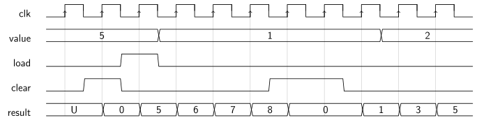

Struktureller VHDL Entwurf
Allgemeines
Die Basis für den strukturellen VHDL Entwurf ist ein synchrones Design. Prinzipiell besteht jedes synchrone Design aus Kombinatorik und Flip-Flops (meist Register genannt), die alle auf einen gemeinsamen Takt synchronisiert sind.
Um das Design zu strukturieren wird meist das Design meist als Datenpfades aufgebaut. Elemente eines Datenpfades sind dabei:
- Multiplexer
- Arithmetische Operatoren (Addierer, Subtrahierer, usw.)
- Logische Operatoren
- Komperatoren
- Register
- Diverse andere Elemente wie Vorzeichenerweiterung usw.
Die Elemente und die Pfade zwischen den Elementen können entweder einzelne Signale sein oder mehrere zusammengefasste Signale (Busse).
Beispiel
Im folgenden Beispiel soll ein Zähler aufgebaut werden mit drei Eingangssignale value (Bus mit 8 Bit), load und clear. Wie in allen
synchronen Designs wird ein gemeinsamer Takt für alle Register genutzt (hier clock). Das Register hat eine Bitbreite
von 8.
Textuelle Beschreibung
Die Funktion soll wie folgt sein:
- Wenn
cleargleich1ist, soll der Zählerstand auf0gesetzt werden, - ansonsten wenn
loadgleich1ist, soll der Zählerstand aufvaluegesetzt werden - ansonsten soll der Zählerstand um
valueerhöht werden.
Schaltung

VHDL Entity
entity sum is port ( clk: in std_ulogic; value: in unsigned(7 downto 0); load: in std_ulogic; clear: in std_ulogic; result: out unsigned(7 downto 0) ); end entity;
VHDL Architecture
architecture behave of sum is begin process(clk) begin if rising_edge(clk) then if clear='1' then result<=(others=>'0'); elsif load='1' then result<=value; else result<=result+value; end if; end if; end process; end architecture;
Timingdiagramm
